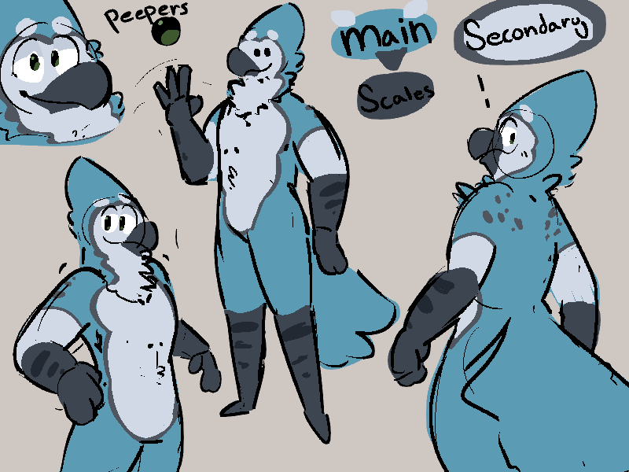
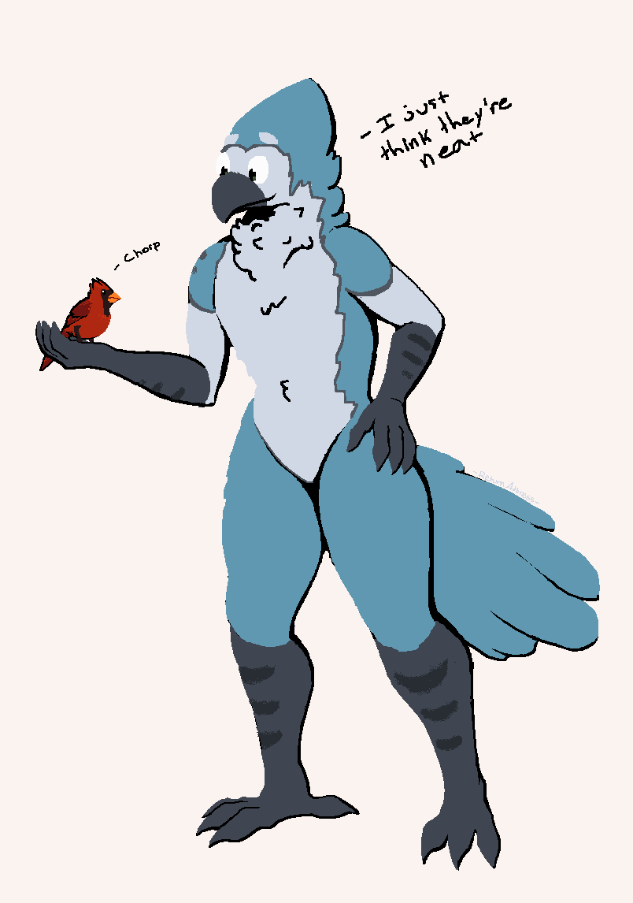

Warning! This page is under construction. Be sure to check back soon!
Warning! This page is under construction. Be sure to check back soon!
Media
A basic collection of some of my favourite pieces of my bird. Heavily WIP!

Original ref by Honkbird!

Wonderful MSPaint art by ReturnAddress!
Incredible icon by Beelziebub!